The epoxy primer I used on the underside of my repairs is some pretty good stuff, but I wanted just a hair more protection down there. And after all can you really say you did a rust repair job on your Jeep if bedliner wasn’t involved? Because of that I picked up some UPOL Raptor liner to spray. I bought the 4qt spray kit because I wanted some leftover bedliner to spray my new rear bumper later on but I’m getting ahead of myself.
Before I could spray it I needed to scuff up all my fresh paint. I used 180 grit for most areas, and red scotchbrite in the tight spots.

 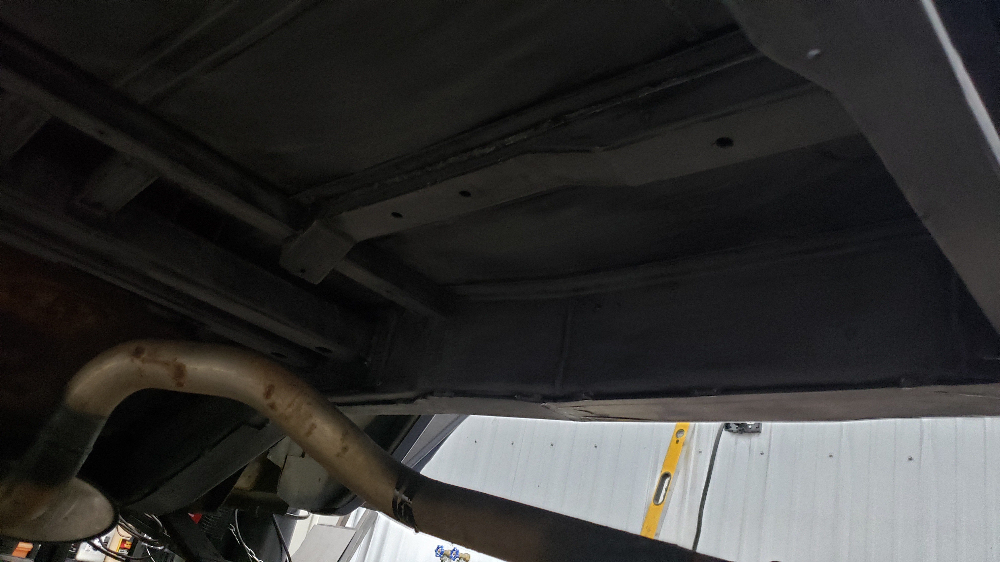
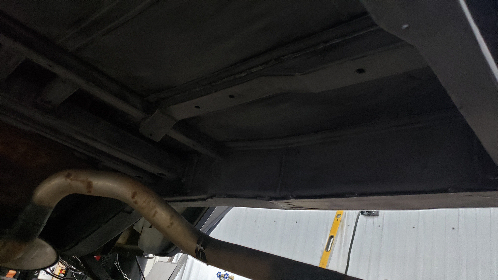
Scuffing everything up wasn’t very fun. You’re laying on your back underneath the Jeep against the cold concrete slowing sanding each and every section. Your arms get tired and the dust continuously falls in your eyes even though you have safety glasses on. But you gotta get every inch to ensure the paint won’t fail prematurely.
Once all the scuffing was done I took the oppurtunity to seam seal all the cracks.
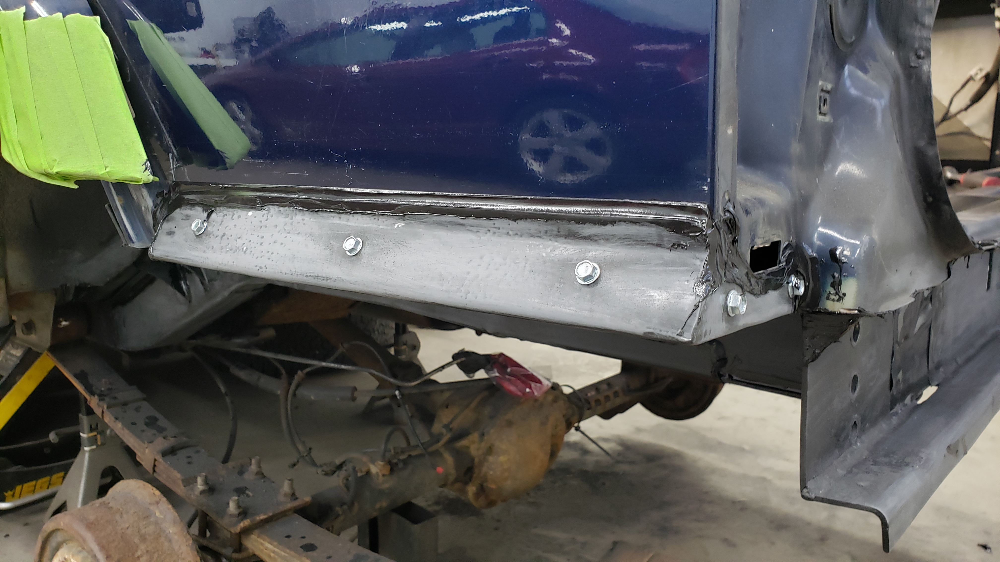

I ended up using 3 tubes of 3m urethane seam sealer.

 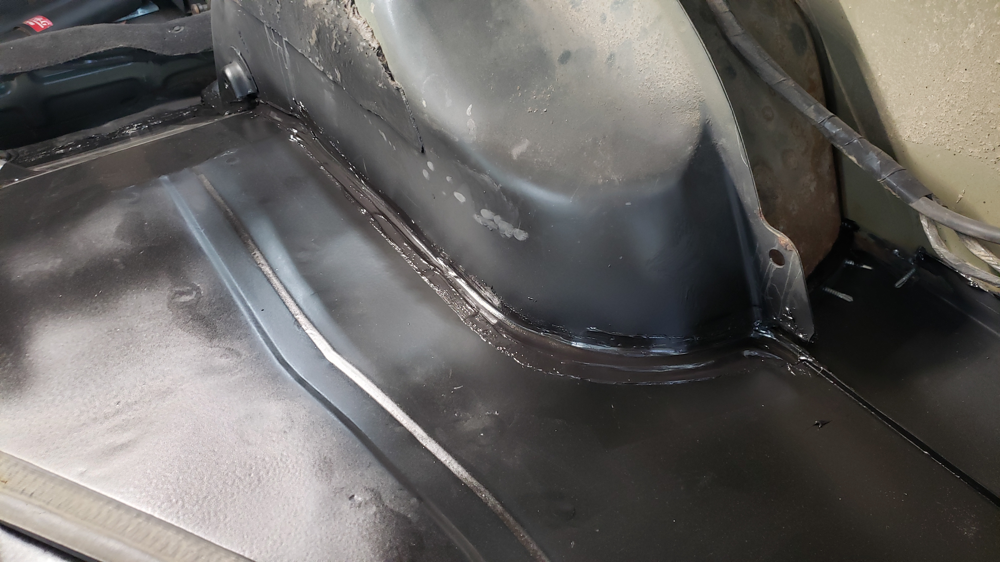
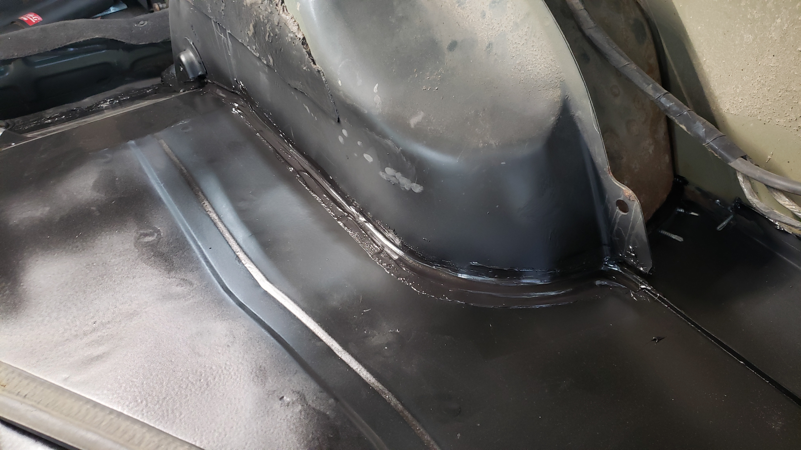

And I got everywhere possible.


At this point I was ready to spray bed line. The UPOL kit is pretty easy to use as they provide a measuring cup so you can pour out the proper amount of hardener and then dump it into each quart tube of the bedliner. Then you shake it for 2 minutes and it’s ready to spray.
I didn’t take many pictures because spraying bed liner is some pretty horrible stuff and it smells nasty. Make sure you wear a respirator.
Take your time and spray carefully. It’s important to get a good even coat.
 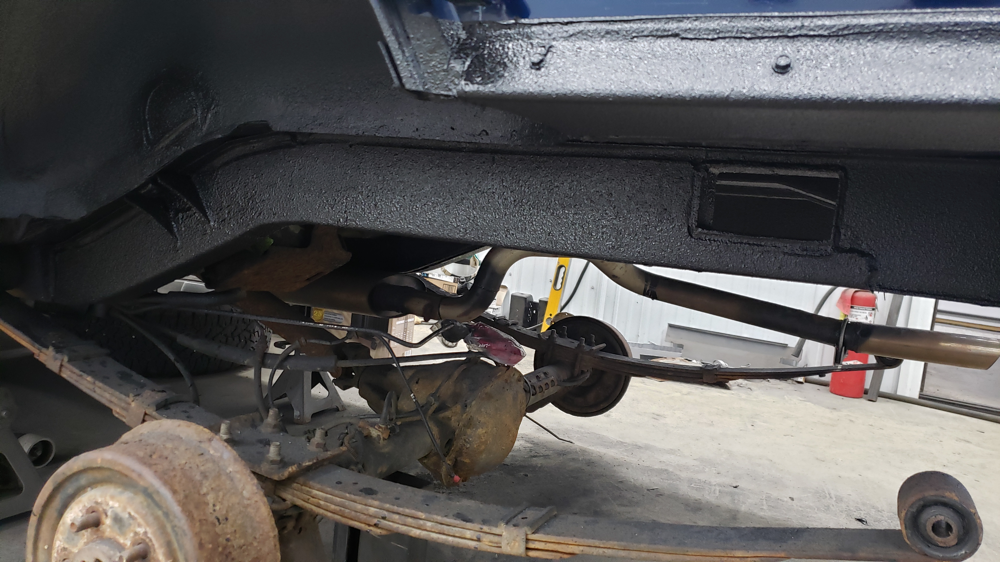
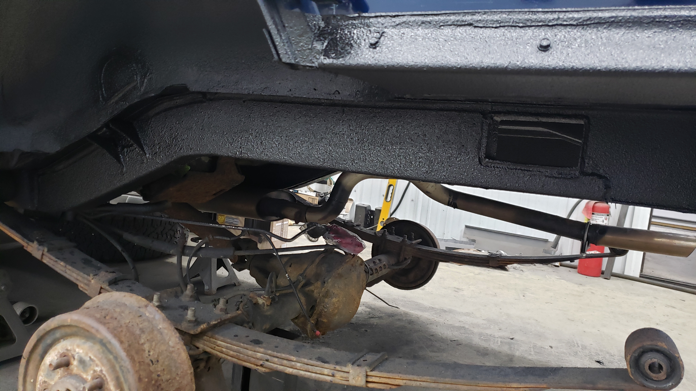


I learned after the fact that I should have sprayed epoxy primer over the seam sealer because bed liner doesn’t bond well to it. I’ve noticed the bedliner comes off a little too easy from the seam sealer but I’m not too worried about it long term. If I could go back and do it again but alas I haven’t worked out the kinks in my time machine yet.
With the bedliner done it was finally time to start wrapping up this way too intensive repair. When it comes to a repair like this I think it’s very important to match OEM spec. My main goal with this repair has to make it so it’s hard to tell anything was done at all. I even picked up some sound deadening so I could mimic the OEM set up. Plus I really didn’t want to worry about exhaust drone inside the cabin.
 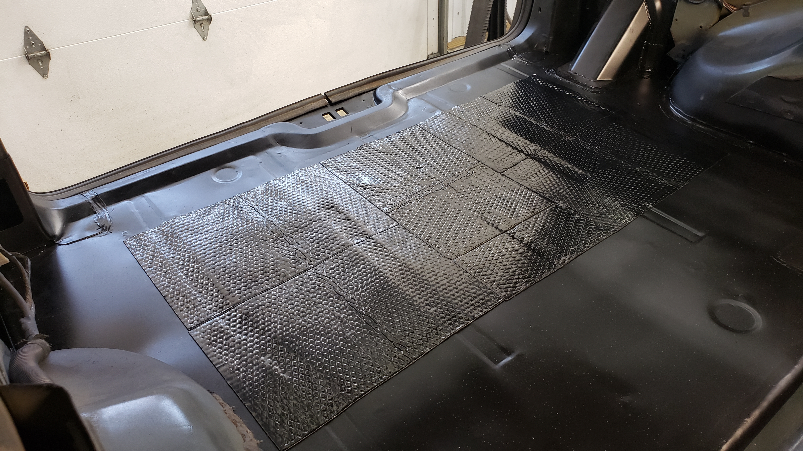
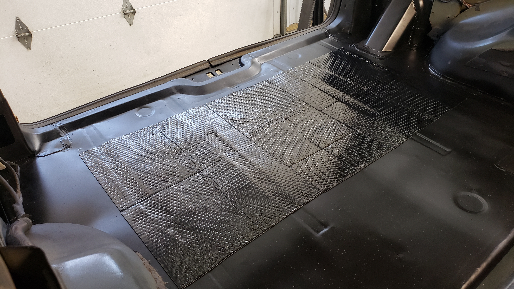
The best part of this repair was beginning to reassemble everything for the final time. It started with bolting back in the strut mounts

After that I needed to hook up the ABS sensors. But before I could do that I had to drill some holes for the wires to pass through the floor. I had been saving the original peace of the floor for this so I could match up where they use to be. 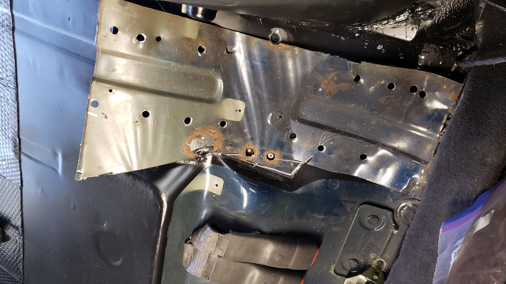 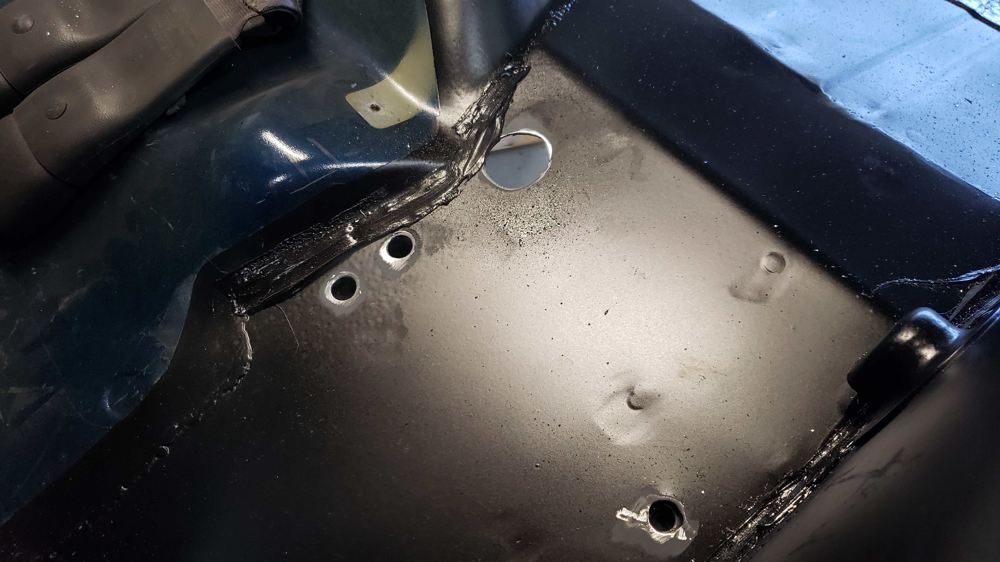
After drilling each hole I re applied paint to ensure no bare metal was exposed.
As the repair winded down I began to try spending less and less as I had blown through my budget by a long shot. But as the Cherokee would have it, it demanded more. The fuel filler neck was farely rusted, but I was going to keep using it for now. At least I was planning on that until I realized the rust had managed to eat all the way through it.
At first glance it doesn’t look too bad.

But if you looked down the opening you could see it was done for.

From there I hooked the shocks back up. 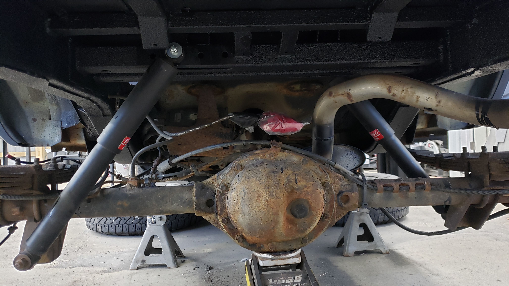
And re connected all of the ABS sensors.

The fuel neck was all ready to mate back up to the fuel tank. 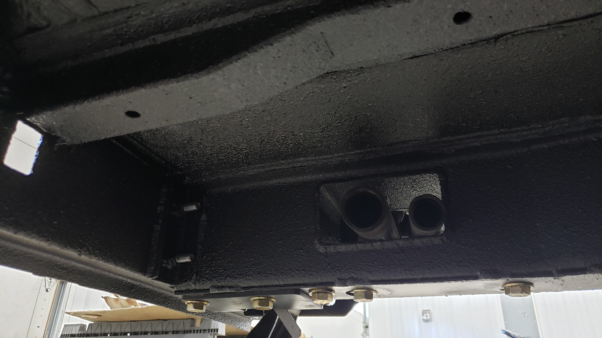
I aplogize but I forgot to take a picture of the fuel tank mounted back up. But here’s the fuel neck re connected to the tank. Because apparantly I thought that was more important lol.
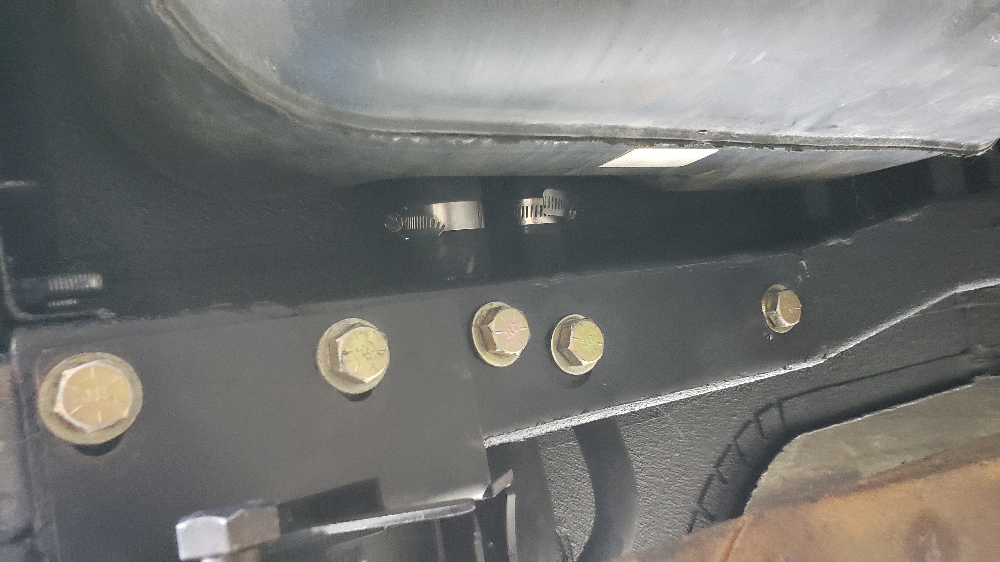


With fuel squared away I mounted the exhaust hanger back up.

Then carefully re assembled the interior.

It nice to see that the rear seat went back into position perfectly after messing with the mounts.
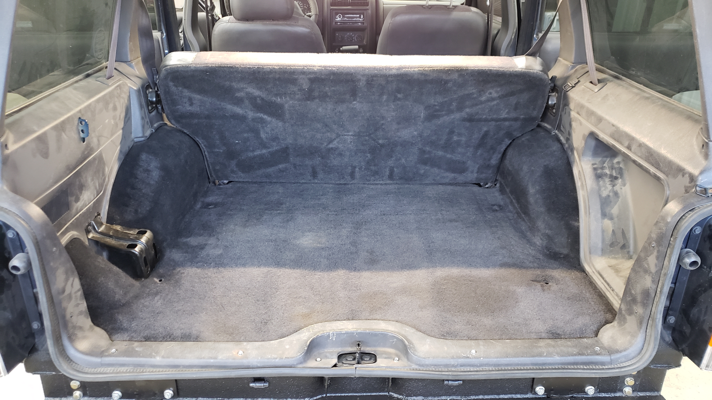


And finally for the first time in two months, and one week the Jeep was done.

Well until I turned on the Jeep and found it had three dash lights on. And no the hatch was no open.

Turns out the hatch light was on because the striker wasn’t position properly. The ABS light was on because I left the passenger front sensor unplugged when I replaced the heater core. And the check engine light was on due to an evap emission leak.